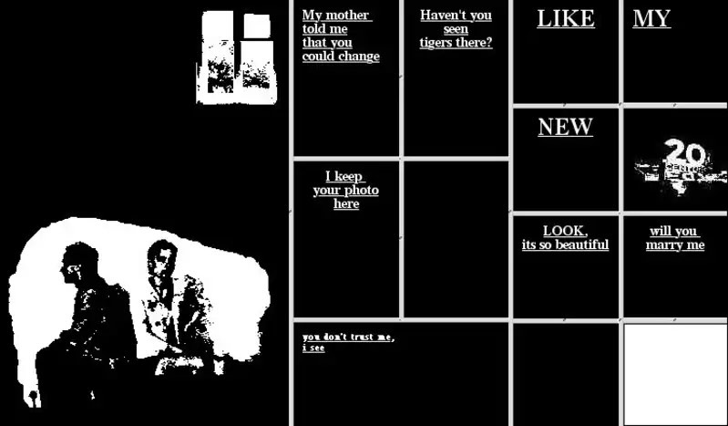
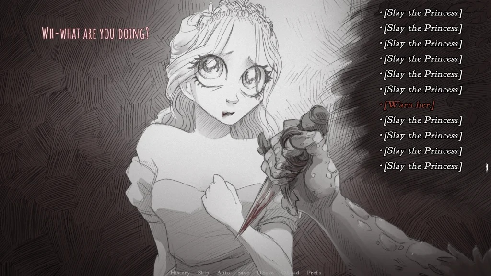
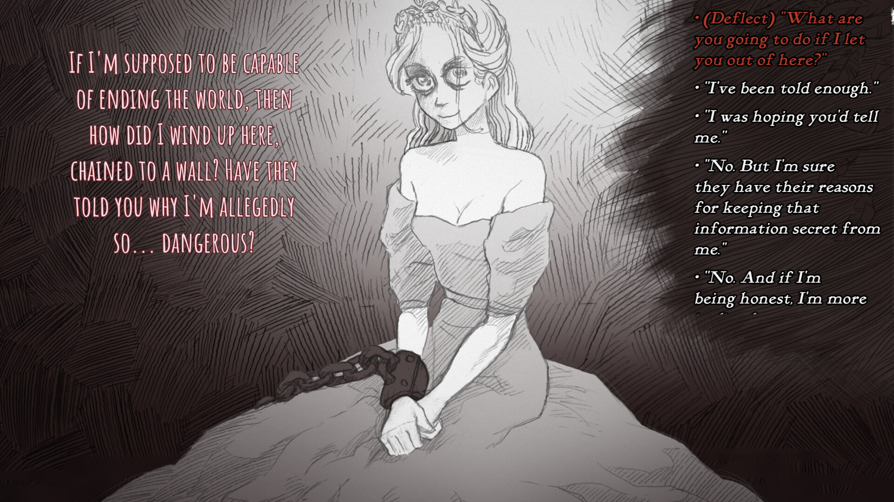
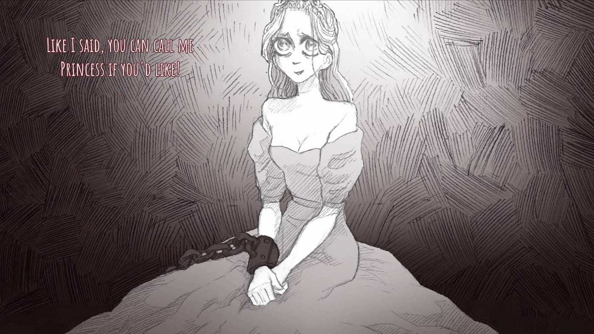

My Boyfriend Came Back from the War by Olia Lialina is one of the most famous examples of using the web brower to tell an interactive story. Lialina uses frames within the page to tell a non-linear narrative about the relationship between two people. The user navigates this site by clicking on images or text within the frames, which divides the frames to display new content. The order the frames are clicked on can influence the way the story is interpreted. I think the use of screen division is a very innovative way to tell a story within the browser. I considered using a similar format so that the user could see how each choice can lead to a different outcome; therefore each frame splits into the two outcomes that result from a choice. However, I think the surrealness of the structure might draw away from any realism, and make it too clear that the interaction is non-human. I would like for there to be some more tension between our innate tendency to ascribe humanity to our interaction and the uncanniness of its clear inhumanity.

Slay the Princess is a horror visual novel game created by Black Tabby Games. It plays like a choose-your-own adventure , where different dialogue choices influence the way the story unfolds and lead to very different endings. I particularly enjoy the player agency in this game; the player is able to use dialogue to explore different possibilities, and the choices do have a strong influence on the narrative. I think the conversational format of this game’s choices will align well, given that the Turing test was a major inspiration for this project.

I also particularly enjoy the subtleties in the narrative differences. For instance, see the two images below:


In the first screen, the princess appears menacing and secretive, a reaction influenced by the player’s choice of picking up a knife in the previous screen. In the second screen, however, the princess appears vulnerable and innocent, because the player chose not to pick up that knife. I think these subtle differences in perception will play well with my project's goal of replicating the uncanniness of human-machine interaction, and the impact that our preconceived biases have on our perception. If a player decides early in the game that the character is a machine, subtle differences can solidify that bias, and vice versa- much like the functioning of real human perception.